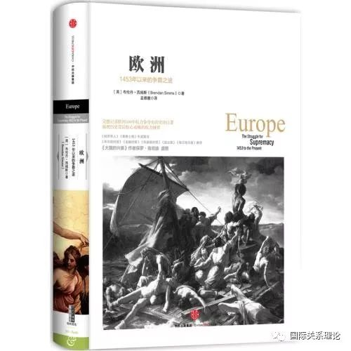

收录于合集

德国，欧洲的“棋眼”
作者：赵青新
来源：南风窗
德国地处欧洲心脏。它曾威盖天下，续扬罗马帝国的雄风；它曾长期分裂，无力抵御他者蹂躏。铁幕就在此处拉开，冷战又在这里结束，如今它是欧盟的发动机。德国的兴衰荣辱牵引着周围各个国家的命运，牵引着整个欧洲乃至世界的命运。
身为剑桥大学国际关系史专家，英国历史学家布伦丹·西姆斯深刻地意识到：如果说1453年迄今的欧洲历史是一盘错综复杂的棋局，那么，要想下对棋路，关键就在于抓住棋眼—德国。围绕德国的地缘政治，以点带面，渐渐向往扩散、拓展，将英国、法国、奥地利、意大利、俄罗斯乃至大洋彼岸的美国的历史铺展延伸，《欧洲》这部作品就得以拥有了庞杂而不紊乱、繁密而有头绪的脉络。
西姆斯说：“这本书将展示神圣罗马帝国及其继承国在欧洲权力均势中的中心地位，并考察由此发展出来的全球体系，其中各个大国都有不同的战略考量。”国际政治中有一种很有名的理论，叫“现实主义理论”。这个理论认为，任何国家都有追求利益最大化和权力最大化的愿望，尤其是任何大国都有修改国际现状、扩张自己权力的意图，这种意图往往以损害别人的权利为代价。《欧洲》主要展示的，就是德国民族主义的扩张欲望如何打破欧洲和世界的平衡，以及这种欲望如何受到遏制，还有其他大国如何为自身谋取利益的过程。
“谁能控制欧洲，谁就能领导世界。因此，我们奋斗的目标仍然是创造一个统一的欧洲，但是只有德国才能将欧洲联结起来。”这是希特勒在1943年时说的。希特勒罪恶滔天，但不能否认他有不少卓见，这句话指出了德国在欧洲政治格局中的重要地位。神圣罗马帝国的政治遗产是如此重要。从《欧洲》徐徐展开的历史图卷中，我们可以看到：英王亨利八世和土耳其的苏莱曼大帝都想要夺取它，查理五世曾经拥有过它。从法王弗拉索瓦一世到路易十六，都在谋求夺取帝国的王冠，拿破仑也非常严肃地考虑过要成为那里的主人。而希特勒的野心通过德意志第三帝国展露无遗。事实上，从伊丽莎白一世、克伦威尔、马尔伯勒公爵、俾斯麦，一直到后来的罗斯福、斯大林、戈尔巴乔夫，世界的目光一直聚焦德国。简而言之，只要控制了德国，就控制了欧洲的中心；只要控制了欧洲，就将主宰整个世界。
这550年，德国始终站在风口浪尖。它也曾被他国觊觎、劫掠；它想要生存空间，却陷于重重包围；它想要往外扩张，却带给其他民族惨痛。德国的发展是如何与世界历史的发展相互交织的？德意志人是如何在民族主义与世界主义之间寻求自身定位的？德国反复经历分裂、统一、再分裂、再统一的疼痛。它既表现为保守派与统一派的矛盾，也隐藏在大德意志派和小德意志派的争论中。德意志帝国建立后，它又影响着从“大陆政策”到“世界政策”的转变，并最终在所谓“1914年思想”的自诩中，让新生的民族国家灰飞烟灭。在魏玛共和国解体之后，纳粹德国巧妙地用一个纯粹的民族共同体和不断扩张的帝国版图，暂时减轻了民族主义与世界主义的张力。但是，这种以极权和侵略为主要手段的解决方式，从根本上违背了世界历史的发展规律，德国最终自尝苦果。在冷战的背景中，德国的分裂是必然结果。两个德国分属不同阵营，民族统一似乎遥不可及，然而正是在这种沉痛的反省之后，两个德国不约而同将自己定位于“欧洲的德国”，终于在1990年重新走到了一起。
德国的历史教训在于，它曾经把属于自己的特性作为普遍真理，强迫其他民族接受，甚至不惜为此血腥屠杀。如今，德国已经承认人类历史发展的多元性，并且正确地把自己在二战后走过的道路视为普遍真理之下的特殊经验，统一后的德国重新腾飞，并在欧盟的发展中担当了举足轻重的领头羊。世事如棋局局新，我们面对的是一个多种因素并存的复杂世界，可能是竞争关系，也可能是合作关系，也可能是竞合关系。全球化的今天，如何做活这盘大棋？人类比以往任何时候更加共生共存，相依相伴。
《欧洲——1453年以来的争霸之途》
【英】 布伦丹·西姆斯 著
孟维瞻 译
中信出版社
购买本书，请点击“阅读原文”
